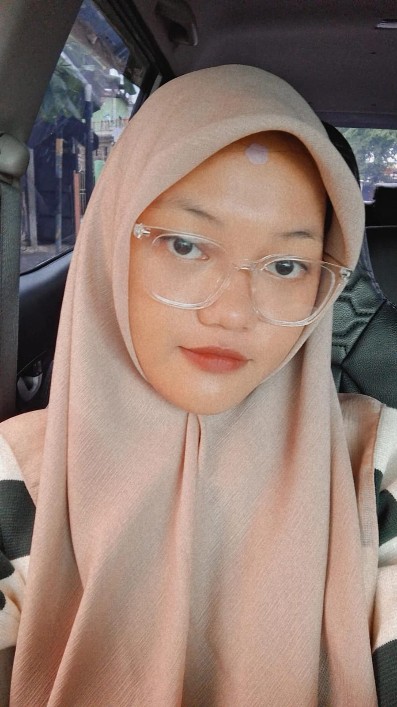

Nayli
I,m
“Saya adalah seorang mahasiswa Prodi Informatika Fakultas Teknk Universitas Jenderal Soedirman. Sebagai mahasiswa yang berkomitmen, saya selalu berusaha dalam mengembangkan kemampuan saya untuk berkontribusi dalam industri IT. Apalagi saat ini IT sangat dibutuhkan untuk pengembangan perusahaan dan menunjang pekerjaan nantinya, serta menuju indonesia emas 2045. Didorong oleh prestasi akademik dan mengejar keunggulan, saya bertujuan untuk membangun karir agar bisa sukses di bidang ini.”